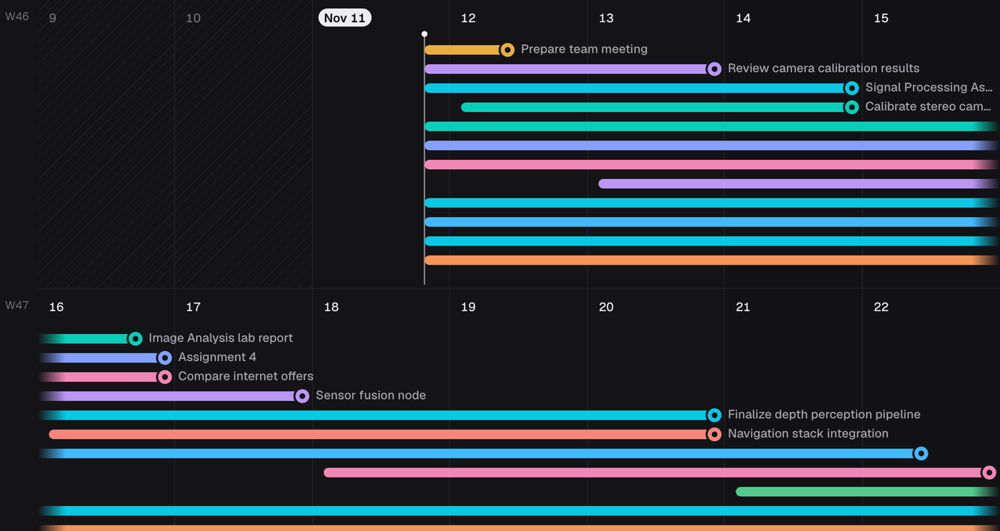
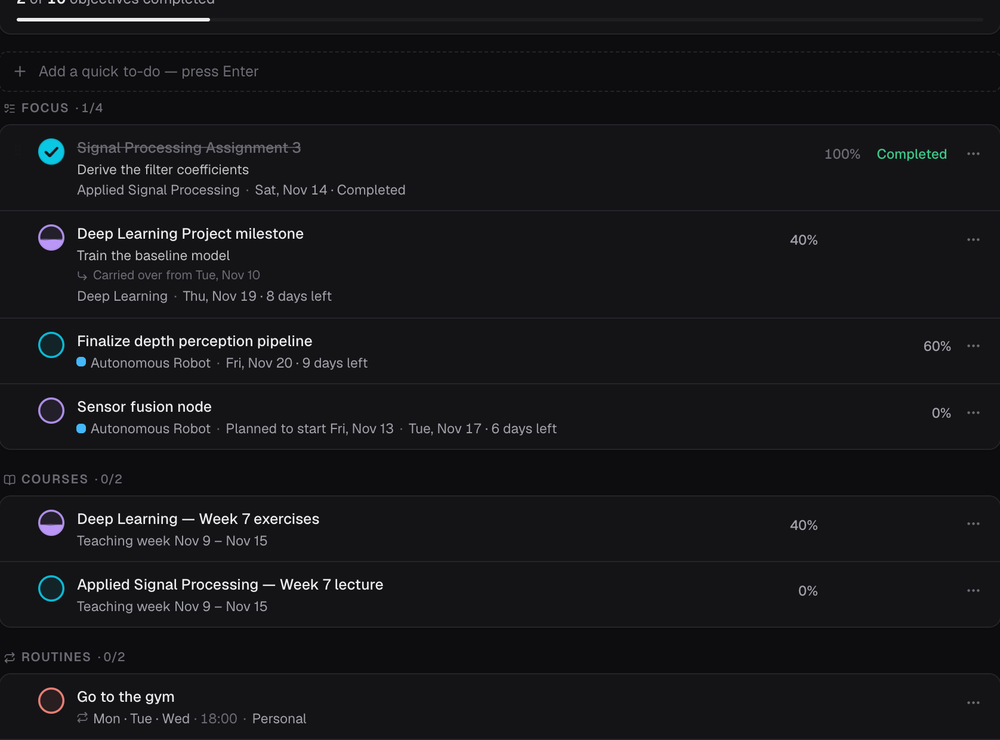
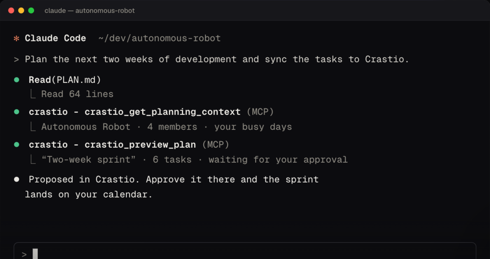
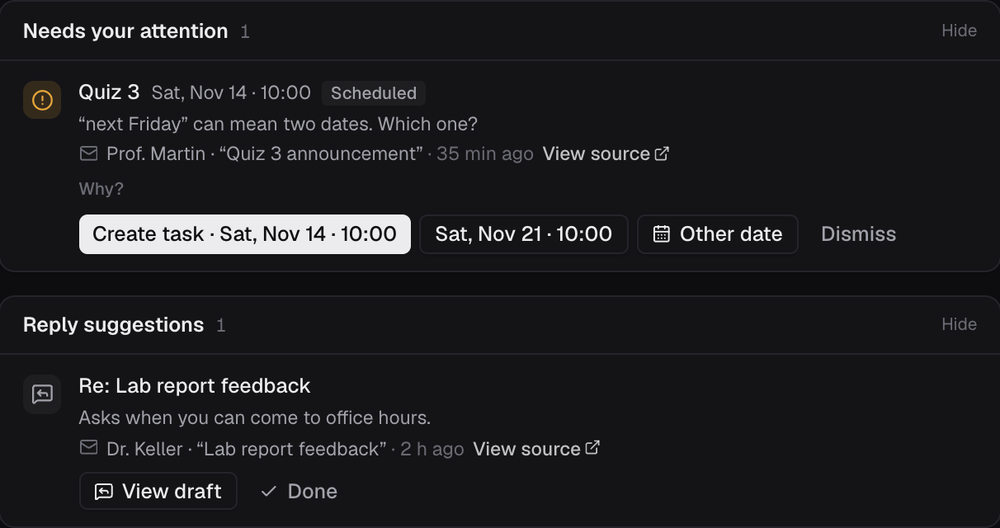
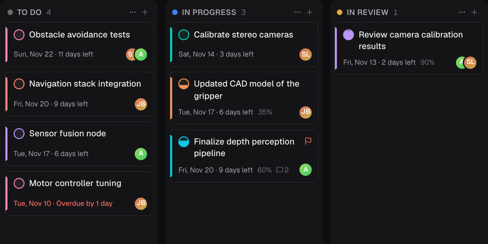
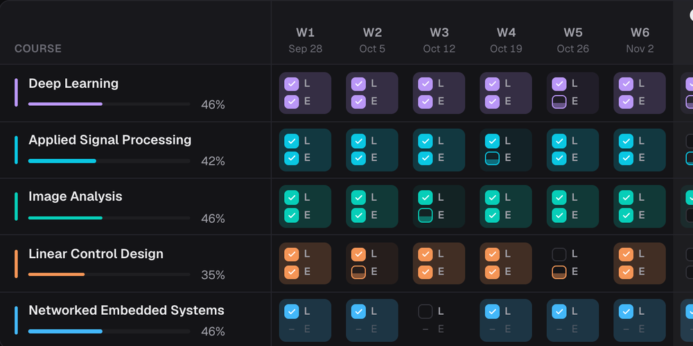

Deadlines you can see
Ribbons shrink as the date approaches. The calendar adapts from a few days to several months.

Crastio is a planner for Mac and Windows that shows every deadline as a ribbon of the time you have left. Plan your day, follow your courses, run projects with others. It works offline and without an account.
Free during the beta · macOS and Windows
Crastio is a complete planner on its own. Accounts, sync, shared projects, Watchers and AI assistants are there when you want them, and off until you turn them on.
Ribbons shrink as the date approaches. The calendar adapts from a few days to several months.

Pick what matters today from your tasks, courses and routines. What you don't finish carries over.

Ask for a plan right where you code. Claude Code proposes it to Crastio; nothing is added until you approve.

Let Crastio watch an Outlook mailbox, course calendars or pages, and turn clear deadlines into tasks, even while your computer is off.

A board with your own columns, a list and a timeline. Sharing a project with other people comes with accounts.

A semester tracker for lectures and exercises, with your materials.

No ads, no analytics, no tracking. Without an account nothing leaves your computer. With one, your workspace syncs through servers in the EU and only you — and the people you share a project with — can read it. Read the privacy policy.
Crastio is in beta: what confuses you, what's missing and what breaks is exactly what I want to hear. How to send feedback.